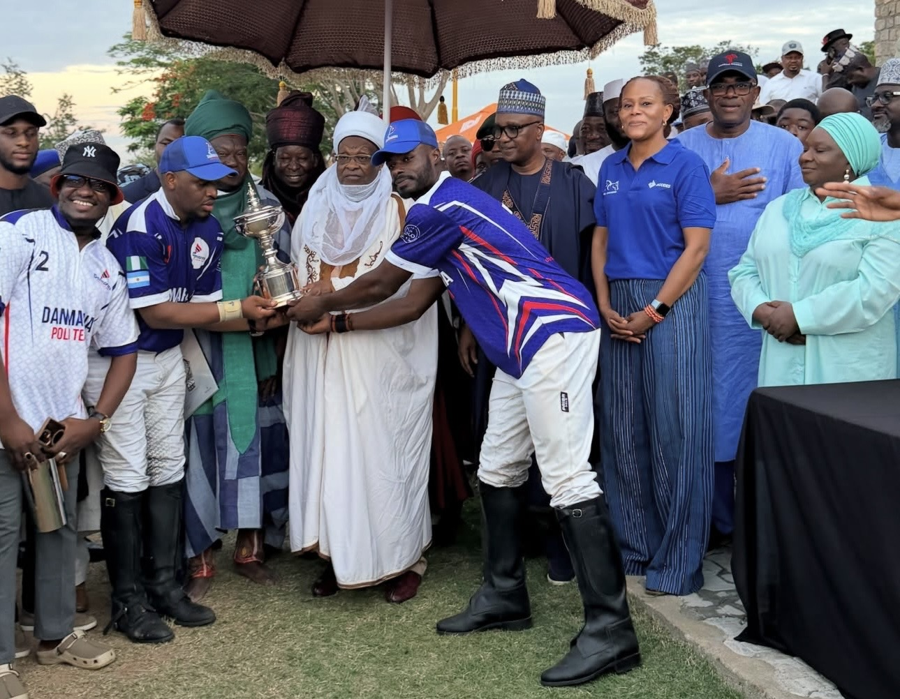
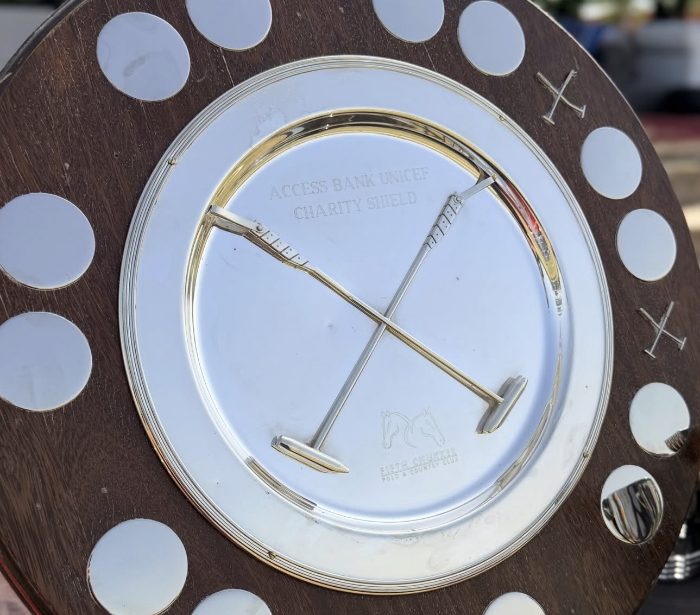
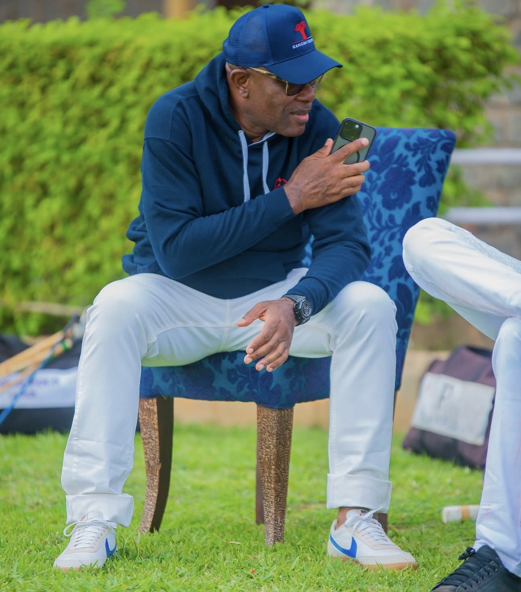
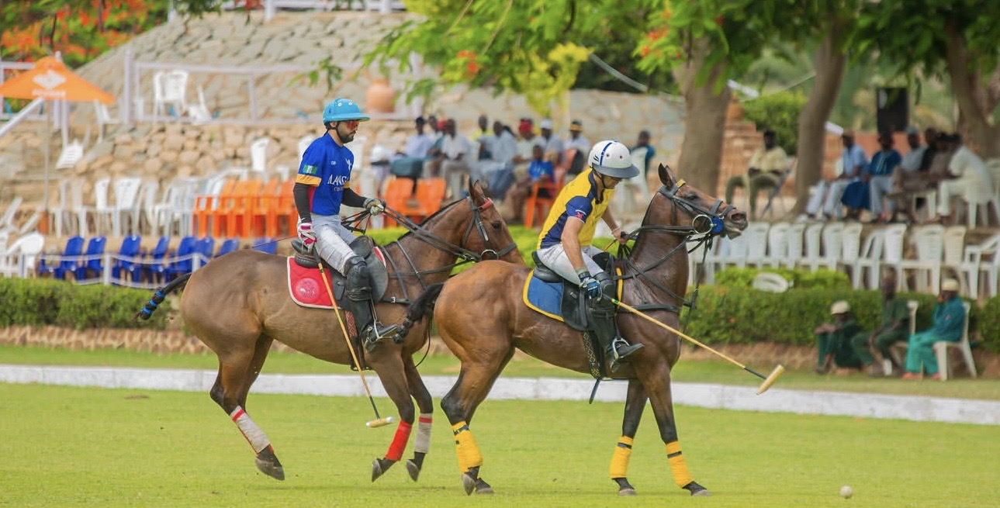

Since 2006
UNICEF Partnership
Renovated schools, child protection, healthcare and education for vulnerable children.

Social Responsibility
Since 2006, Fifth Chukker has used the Sport of Kings to change lives — funding education, healthcare and hope across Nigeria.
Home / Social Impact
Our Impact
Every chukker played is a chance to give back — channelling the glamour of world-class polo into education, healthcare and lasting opportunity for Nigeria's most vulnerable.
Our Causes

Renovated schools, child protection, healthcare and education for vulnerable children.

Breast-cancer awareness through polo, clinical screenings and fundraising.

Women's empowerment, youth development and sustainability.

School support, scholarships and learning resources for children.

Clinical screenings, healthcare access and awareness drives.

Environmental responsibility across our 3,000-hectare estate.
The Charity Shield
The Access Bank UNICEF Charity Shield brings together patrons, players and corporate allies each year — turning a celebrated day of polo into a powerful engine for fundraising that reaches children and communities across Nigeria.
Our Commitment
Annual impact reports keep our giving honest, measurable and accountable.
UNICEF, MTN and corporate allies multiply every contribution we make.
Lasting change designed to outlast us — for the next generation.

Join the Mission
Become a partner, sponsor a cause, or play for a purpose — together we turn polo into progress.